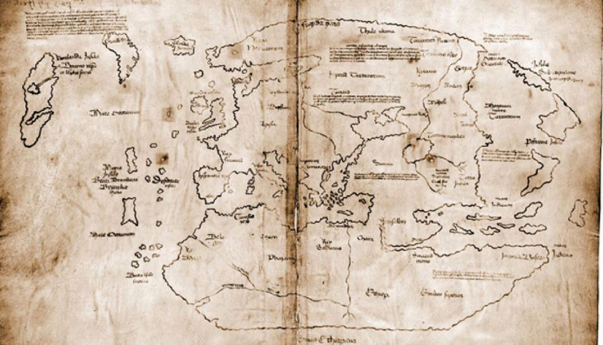

37.- Aprendiendo a hablar.
Pasaron las semanas y los meses. Con paciencia y gran esfuerzo, Lur fue aprendiendo su idioma. Inés, Tristán y Asad, le ayudaron mucho con el árabe andalusí, dialecto del árabe hablado en Al-Ándalus en esa época. Entre los cuatro se creó un vínculo, comenzaban a tener amistad y lo pasaban bien juntos. Especialmente Inés y Lur, tenían química, aunque hasta el momento no había confianza. Lur, se resistía a contar cosas sobre él. Temía que se asustaran y que, en consecuencia, su vida corriese peligro.
Pero en este momento, los delicados acontecimientos ponían en peligro la vida de cualquiera. Exactamente era el 6 de marzo de 1488. Baza resiste a los ataques del ejército de los castellanos, sin embargo, la situación comienza a ser crítica. Hay miedo generalizado. Por suerte para ellos, el lugar donde se ubica la hacienda se encuentra, de forma natural, camuflada por la frondosidad de la vegetación pasando desapercibidos a ambos ejércitos. Asad se ha trasladado también a vivir en la hacienda, pues el camino a Baza se ha vuelto mortal.
Aquel día, Inés le decía a Asad que no sabía nada de su familia y que estaba muy preocupada. Quizás estos miedos, que Lur escuchaba y entendía, le hicieron dar un paso más para acercarse a ella.
Al ser las circunstancias tan difíciles, Inés se reunió con todos.
—Mirad, los castellanos continúan avanzando. Granada es el último reducto del reino Nazarí y están comenzando por Baza. Así que no debemos salir de la hacienda. Tenemos que organizarnos. Habrá que ser autosuficientes; tenemos tierras para cultivar, gallinas y cerdos. Suficiente para sobrevivir.
—Ayudaré en lo que me pidas —dijo Lur—. Aunque no tengo experiencia de trabajar en el campo.
—De acuerdo. En principio Tristán se ocupará de las gallinas y Asad de los cerdos. Yo revisaré la huerta, y tú Lur, me ayudarás a plantar y recolectar. Venga, ¡todos a trabajar!
Cuando Tristán y Asad se fueron. Lur que continuaba ahí, se acercó a Inés.
—Muchas gracias por todo. Supongo que ya es el momento de contestar a tus preguntas.
—Sabes que necesito respuestas.
—Estoy preparado. Creo que puedo confiar en ti —Lur sonrió.
—¡Bien!, vamos dentro, tengo un mapa que enseñarte.
Dentro de la hacienda, Inés desplegó su copia del mapa Vinland.

—Bueno, tu extraño aspecto me permite deducir que no vienes de tierras conocidas, ¿quizás vengas de aquí? —Inés señaló las tierras a occidente de Groenlandia, unas tierras llamadas Vinland.
<< ¡Lista y bonita! Pero esta gente no conoce su mundo, están aún explorándolo. Y también, es obvio, que no tienen el mínimo atisbo de conocimiento sobre la evolución humana>>
—Lur, ¿qué piensas?
<<Será difícil explicar lo que soy y mucho más, de dónde vengo. Por ahora saciaré su sed de conocimiento...Si, ya sé cómo.>>
Lur presionó el mapa al mismo tiempo con su pulgar e índice, superando sobradamente los extremos oeste y este de la tierra de Vinland. Movió la mano hacia abajo lentamente mientras marcaba, con los dedos sobre el mapa, la singular forma del continente americano.
—Tú mapa es inexacto, soy de toda esta tierra.
—Así que ¿no es sólo una isla?
—No, es otro mundo; lleno de tierras, montañas, lagos, ríos y personas.
—¿Personas como tú?
—Si, como yo —mintió instintivamente Lur—. En fin, soy un visitante de otro mundo.
—Encantada de conocerte visitante de otro mundo.
—Encantado Inés. Pero por favor, mantén el secreto. ¿Vale?
—Sobre ti lo mantendré, prometido. Pero, sobre esas tierras nada podemos hacer. Otros van a ir hacia vuestro mundo. Hace un año, entregué una copia de este mapa a un marinero. Tarde o temprano enviaran barcos a explorar.... —Inés dibujo en su cara una expresión de preocupación.
—Tranquila, lo entiendo —Lur se levantó.
En realidad, a Lur no le preocupaba nada de eso, es evidente. Sólo pretendía pasar desapercibido. Pero intuía que con su explicación Inés confiaba algo más en él y aunque sabía que no podía pedirle que le llevara a la zona donde le encontró, pues acababa de explicar que nadie debía salir de la hacienda por los peligros relatados, sólo necesitaba su dispositivo de muñeca que le conduciría a la Anacronópete.
Cuando Lur se iba, se giró y dijo.
—Por cierto, Inés, ahora que ya estoy bien, me gustaría vestirme con mi ropa.
—¡Por supuesto! —dijo Inés—. Te la dejaré en tú alcoba.